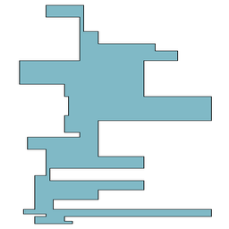
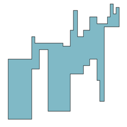
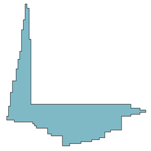
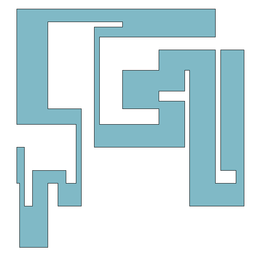
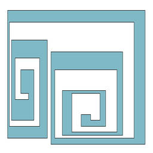

The subclasses of orthogonal polygons that our library currently provides are described below. The polygons we show have been generated by our program.
|  |
Row-Convex Orthogonal PolygonsAn orthogonal polygon is row-convex if it is monotone with respect to a vertical line. An orthogonal polygon is monotone w.r.t. a line L if its intersection with any line L' perpendicular to L has at most one connected
component |
|
|  |
Column-Convex Orthogonal PolygonsAn orthogonal polygon is column-convex if it is monotone with respect to an horizontal line. |
|
|  |
Convex Orthogonal PolygonsA convex orthogonal polygon is an orthogonal polygon that is both row-convex and column-convex. |
|
|  |
Path Orthogonal PolygonsA path orthogonal polygon is an orthogonal polygon for which the dual graph of its rectilinear partition is a path graph. The rectilinear partition is obtained by adding all the rectilinear (horizontal and vertical) cuts (or chords) incident to the reflex vertices of the polygon. |
|
|  |
Spiral Orthogonal PolygonsA spiral orthogonal polygon is an orthogonal polygon whose boundary can be divided into two chains, a reflex and a convex vertex chain. |